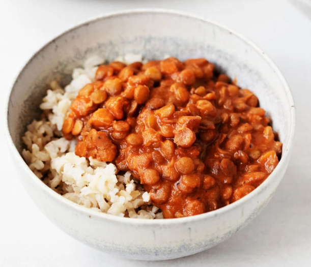

Slow-Cooker Masala Lentils
Back to Index

This easy recipe makes a ton of delicious lentils that can be eaten
over rice and enjoyed for days. An excellent staple food.
Ingredients
- Lentils
- Onions
- Canned Tomatos
- Garum Masala and assorted spices
Instructions
- This recipe is great! Just toss everything into the slow cooker
- Stir well
- Cook on high for 4 hours
Original Recipe
Original Recipe from the full helping